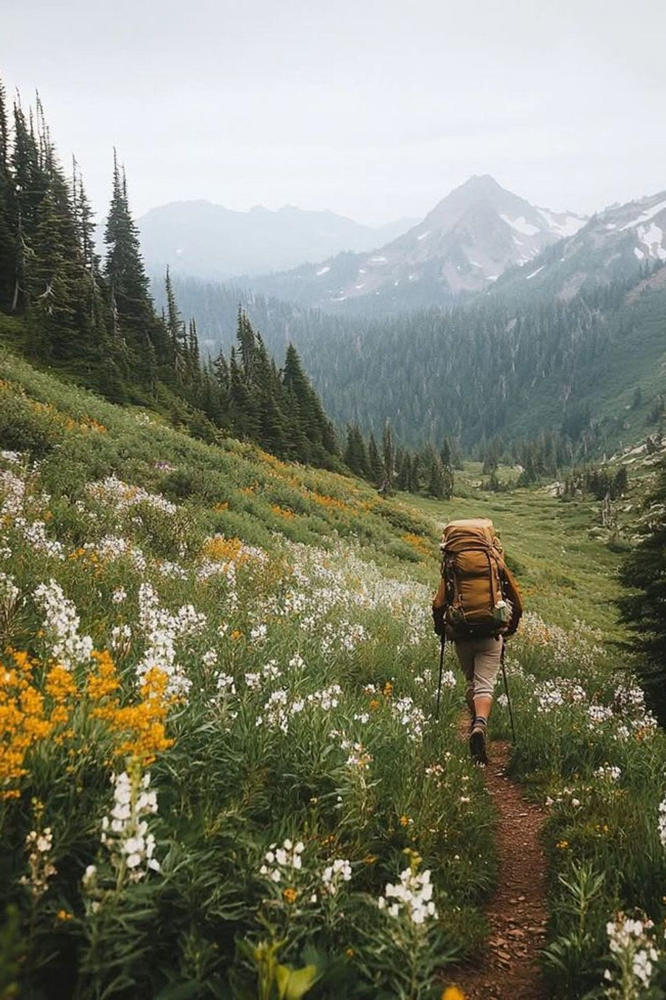

Walk somewhere golden tonight
Tell Traike your time and mood — get a guided route in seconds.

Ready from your location
65 min · Sunset Seafront & Coffee
1
Habima Garden
Start · Shade
2
Carmel Alleys
+22 min · Bites
3
Jaffa Overlook
+43 min · View
Continue or replay
Neve Tzedek Courtyards
50 min · 4 stops · Saved yesterday
Jerusalem Windmill & Yemin Moshe
75 min · 5 stops · Walked Sun
Chat with Traike
Near Habima Square · Tell me your vibe or stops.

Traike · Your trail guide
Pick a mood below or name places you want to see — I'll connect them into an easy route.
What mood or stops?
Time available
More route options (pace, loop, distance)
4 stops · 4.8 km · ~78 min walk
On trail · Stop 2 of 4 · 34 min left

Carmel Market Spice Alley
Turn onto Gedera St for roasted halva, Yemenite bakeries, and shaded stone courtyards.
Trails & friends
Every walk you saved, completed, or picked up from friends.

Habima, Carmel & Jaffa Port
4.8 km · 4 stops · Food & Must-see
Jerusalem Rehavia Literary Loop
3.4 km · 5 stops · Hidden gems · Walked
Haifa Louis Promenade Sunset
2.9 km · 3 stops · Viewpoints

Maya Cohen
14 walks completed · 52 km explored across Israel

Walking preferences
App language
Instant Hebrew RTL or English LTR
Appearance
Warm daylight or dusk night mode
Default pace
Normal (15 min/km) · Shaded streets preferred
Your personal walking guide
Save routes, pick up live walks on your phone, and share trails with friends.

Sign in in one step
Please enter a valid email address with @.